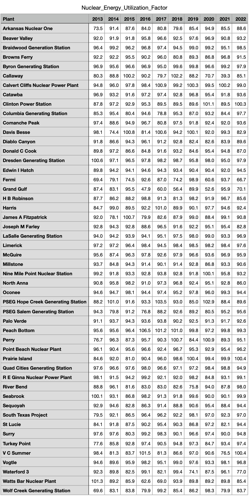
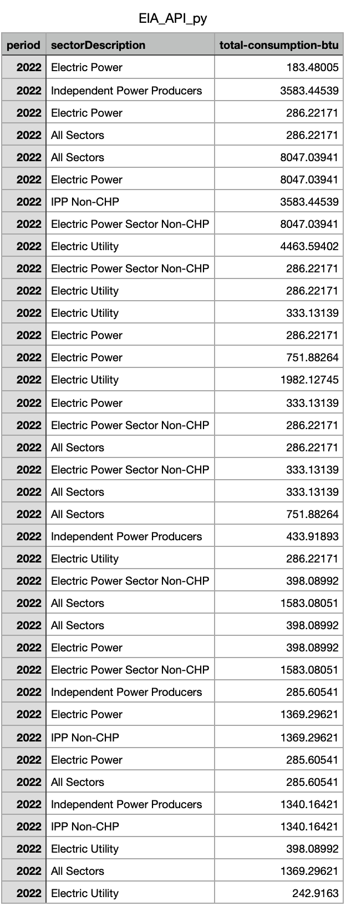
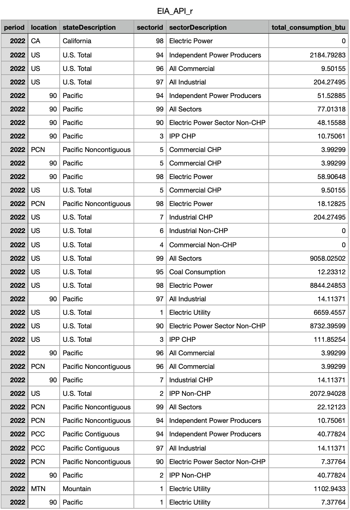

Cleaning
Nuclear Energy Utilization Factor
Cleaning:
Code:
# From https://www.eia.gov/nuclear/generation/index.html
import pandas as pd
import numpy as np
#pd read xlsx
usreact13 = pd.read_excel('HW1/file/Nuclear_Generation/usreact13.xlsx')
usreact14 = pd.read_excel('HW1/file/Nuclear_Generation/usreact14.xlsx')
usreact15 = pd.read_excel('HW1/file/Nuclear_Generation/usreact15.xlsx')
usreact16 = pd.read_excel('HW1/file/Nuclear_Generation/usreact16.xlsx')
usreact17 = pd.read_excel('HW1/file/Nuclear_Generation/usreact17.xlsx')
usreact18 = pd.read_excel('HW1/file/Nuclear_Generation/usreact18.xlsx')
usreact19 = pd.read_excel('HW1/file/Nuclear_Generation/usreact19.xlsx')
usreact20 = pd.read_excel('HW1/file/Nuclear_Generation/usreact20.xlsx')
usreact21 = pd.read_excel('HW1/file/Nuclear_Generation/usreact21.xlsx')
usreact22 = pd.read_excel('HW1/file/Nuclear_Generation/usreact22.xlsx')
# create a function make row 5 as column names and remove row 0-4 and reset index and drop colum 4-17
def make_header(df):
df.columns = df.iloc[4]
df = df.drop(df.index[0:5])
df = df.reset_index(drop=True)
df = df.drop(df.columns[4:17], axis=1)
return df
# apply the function to all dataframes
usreact13 = make_header(usreact13)
usreact14 = make_header(usreact14)
usreact15 = make_header(usreact15)
usreact16 = make_header(usreact16)
usreact17 = make_header(usreact17)
usreact18 = make_header(usreact18)
usreact19 = make_header(usreact19)
usreact20 = make_header(usreact20)
usreact21 = make_header(usreact21)
usreact22 = make_header(usreact22)
# create a function to replace "." and empty space with NaN, drop "Plant ID" column and rename "Plant Name" to "Plant", make colum "Nameplate","Summer", "Utilization Factor" as numeric
def clean_df(df):
df = df.replace(r'^\s*$', np.nan, regex=True)
df = df.drop(columns=['Plant ID'])
df = df.rename(columns={'Plant Name':'Plant'})
df['Nameplate'] = pd.to_numeric(df['Nameplate'], errors='coerce')
df['Summer'] = pd.to_numeric(df['Summer'], errors='coerce')
df['Utilization Factor'] = pd.to_numeric(df['Utilization Factor'], errors='coerce')
return df
# apply the function to all dataframes
usreact13 = clean_df(usreact13)
usreact14 = clean_df(usreact14)
usreact15 = clean_df(usreact15)
usreact16 = clean_df(usreact16)
usreact17 = clean_df(usreact17)
usreact18 = clean_df(usreact18)
usreact19 = clean_df(usreact19)
usreact20 = clean_df(usreact20)
usreact21 = clean_df(usreact21)
usreact22 = clean_df(usreact22)
# drop rows that colum "State" end with "Total" and reset index
def drop_total(df):
df = df[~df['State'].str.contains("Total")]
df = df.reset_index(drop=True)
df = df.drop(columns=['Unit ID'])
return df
# apply the function to all dataframes
usreact13 = drop_total(usreact13)
usreact14 = drop_total(usreact14)
usreact15 = drop_total(usreact15)
usreact16 = drop_total(usreact16)
usreact17 = drop_total(usreact17)
usreact18 = drop_total(usreact18)
usreact19 = drop_total(usreact19)
usreact20 = drop_total(usreact20)
usreact21 = drop_total(usreact21)
usreact22 = drop_total(usreact22)
# drop state column, Nameplate, Summer than group by plant and average the data to one decimal place and reset index
def group_plant(df):
df = df.drop(columns=['State', 'Nameplate', 'Summer'])
df = df.groupby(['Plant'], as_index=False).mean().round(1)
df = df.reset_index(drop=True)
return df
# apply the function to all dataframes
usreact13 = group_plant(usreact13)
usreact14 = group_plant(usreact14)
usreact15 = group_plant(usreact15)
usreact16 = group_plant(usreact16)
usreact17 = group_plant(usreact17)
usreact18 = group_plant(usreact18)
usreact19 = group_plant(usreact19)
usreact20 = group_plant(usreact20)
usreact21 = group_plant(usreact21)
usreact22 = group_plant(usreact22)
# merge all dataframes based on "Plant" column, create new columns 2013-2022 and fill in the data
usreact = pd.merge(usreact13, usreact14, on='Plant', how='outer')
usreact = usreact.rename(columns={'Utilization Factor_x':'2013', 'Utilization Factor_y':'2014'})
usreact = pd.merge(usreact, usreact15, on='Plant', how='outer')
usreact = usreact.rename(columns={'Utilization Factor':'2015'})
usreact = pd.merge(usreact, usreact16, on='Plant', how='outer')
usreact = usreact.rename(columns={'Utilization Factor':'2016'})
usreact = pd.merge(usreact, usreact17, on='Plant', how='outer')
usreact = usreact.rename(columns={'Utilization Factor':'2017'})
usreact = pd.merge(usreact, usreact18, on='Plant', how='outer')
usreact = usreact.rename(columns={'Utilization Factor':'2018'})
usreact = pd.merge(usreact, usreact19, on='Plant', how='outer')
usreact = usreact.rename(columns={'Utilization Factor':'2019'})
usreact = pd.merge(usreact, usreact20, on='Plant', how='outer')
usreact = usreact.rename(columns={'Utilization Factor':'2020'})
usreact = pd.merge(usreact, usreact21, on='Plant', how='outer')
usreact = usreact.rename(columns={'Utilization Factor':'2021'})
usreact = pd.merge(usreact, usreact22, on='Plant', how='outer')
usreact = usreact.rename(columns={'Utilization Factor':'2022'})
# drop rows with NaN values and reset index
usreact = usreact.dropna()
usreact = usreact.reset_index(drop=True)
# output the dataframe to csv
usreact.to_csv('Nuclear_Energy_Utilization_Factor.csv', index=False)Result:

Consumption of Fuels for Electricity Generation and Useful Thermal Output(Nuclear)
Cleaning:
# https://www.eia.gov/opendata/browser/electricity/electric-power-operational-data?frequency=annual&data=consumption-for-eg-btu;total-consumption-btu;&facets=fueltypeid;&fueltypeid=NUC;&start=2013&end=2022&sortColumn=period;&sortDirection=desc;
# API_Key = "Bc2HtlspmpvpzuBbPfIi8HoancNTzVYN9YApx3fu"
import requests
import pandas as pd
import numpy as np
import json
import csv
thor_url = "https://api.eia.gov/v2/electricity/electric-power-operational-data/data/?frequency=annual&data[0]=consumption-for-eg-btu&data[1]=total-consumption-btu&facets[fueltypeid][]=NUC&start=2013&end=2022&sort[0][column]=period&sort[0][direction]=desc&offset=0&length=5000&api_key=Bc2HtlspmpvpzuBbPfIi8HoancNTzVYN9YApx3fu"
resp = requests.get(thor_url)
data = resp.text
data = json.loads(data)
details=data['response']['data']
rows=[]
for chunk in details:
row=[]
for key,value in chunk.items():
value=value if value else np.nan
row.append(value)
# print('row',row)
rows.append(row)
# Columns
columns = ['period', 'location', 'stateDescription', 'sectorid', 'sectorDescription', 'fueltypeid', 'fuelTypeDescription', 'consumption-for-eg-btu', 'consumption-for-eg-btu-units', 'total-consumption-btu', 'total-consumption-btu-units']
# import to pandas dataframe
df = pd.DataFrame(rows, columns=columns)
df = df.drop(columns=['consumption-for-eg-btu-units', 'total-consumption-btu-units', 'fueltypeid', 'location', 'fuelTypeDescription', 'consumption-for-eg-btu', 'sectorid', 'stateDescription'])
# export to csv
df.to_csv('EIA_API_py.csv', index=False)Result:

Consumption of Fuels for Electricity Generation and Useful Thermal Output(Coal)
Cleaning:
# https://www.eia.gov/opendata/browser/electricity/electric-power-operational-data?frequency=annual&data=consumption-for-eg-btu;total-consumption-btu;&facets=fueltypeid;&fueltypeid=COW;&start=2013&end=2022&sortColumn=period;&sortDirection=desc;
library(httr)
library(jsonlite)
library(tidyverse)
res <- GET("https://api.eia.gov/v2/electricity/electric-power-operational-data/data/?frequency=annual&data[0]=consumption-for-eg-btu&data[1]=total-consumption-btu&facets[fueltypeid][]=COW&start=2013&end=2022&sort[0][column]=period&sort[0][direction]=desc&offset=0&length=5000&api_key=Bc2HtlspmpvpzuBbPfIi8HoancNTzVYN9YApx3fu")
data <- fromJSON(rawToChar(res$content))
data <- data$response
period <- c(data$data$period)
location <- c(data$data$location)
stateDescription <- c(data$data$stateDescription)
sectorid <- c(data$data$sectorid)
sectorDescription <- c(data$data$sectorDescription)
total_consumption_btu <- c(data$data$`total-consumption-btu`)
df <- data.frame(period, location, stateDescription, sectorid, sectorDescription, total_consumption_btu)
write.csv(df, "/Users/jackyzhang/Documents/Python/DSAN-5000/HW/HW2/Part2/Code/EIA_API_r.csv", row.names=FALSE)Result:
